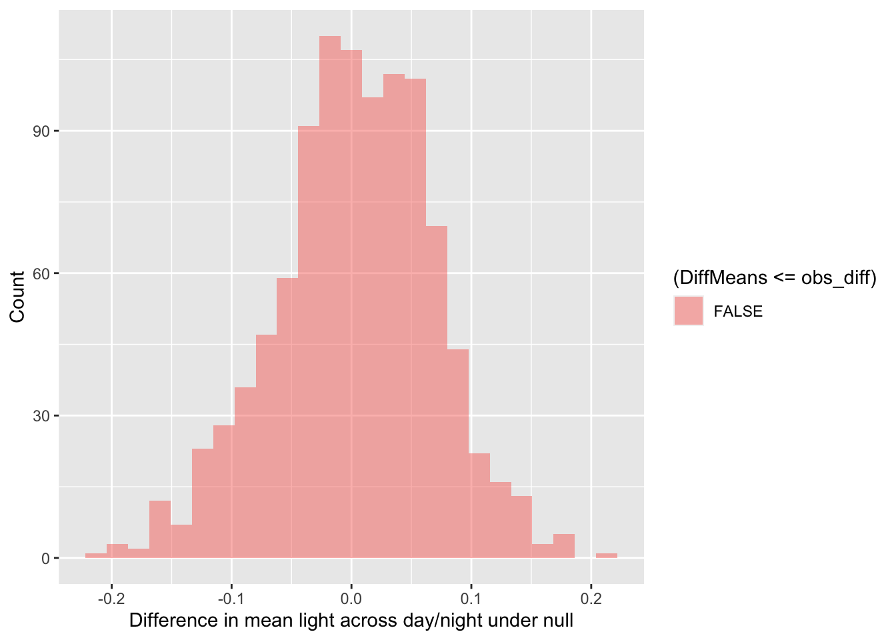
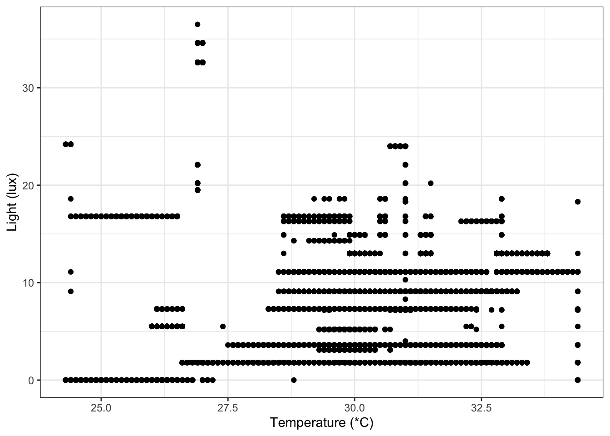
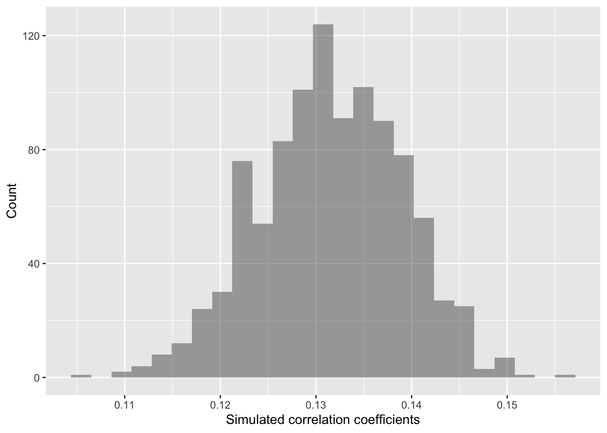

Week 3
2022-09-12
1 Preparing data
Please start by logging into sso.rstudio.cloud/pomona.
Once you’ve logged in, you should see the option to open the
EA 30.1 - Fall 2022 workspace. You can also access the
EA 30.1 - Fall 2022 workspace at this link.
At the workspace, you should then see the “Assignment”
AirQualityLab. Please click on that Assignment. Here is a
direct
link to the AirQualityLab project, but it may not work
if this is the first time in a while that you’re logging into
RStudio.Cloud. If it doesn’t work, no worries - just log in through the
sso.rstudio.cloud/pomona
link.
1.1 Load packages
Below, we will start by loading packages that we’ll need.
### Load packages
library("ggplot2") # plotting functions
library("dplyr") # data wrangling functions
library("readr") # reading in tables, including ones online
library("lubridate") # a package to specify date-time stamps
library("mosaic") # shuffle (permute) our data1.2 Read data
Next, we will pull in our data.
### Load in dataset
airDF <- readr::read_tsv("https://raw.githubusercontent.com/EA30POM/site/main/data/PLairData.tsv")
### How many observations and columns do we have?
dim(airDF)## [1] 19010 231.2.1 Using the
View command
Oftentimes, we may want a more intuitive way to see our data tables.
It can be really annoying when R is too clever and only
displays a subset of the columns of your spreadsheet. The
View() function pulls up an Excel-style data viewer. Let’s
try it below:
View( head( airDF ) )I’m going to use the pipe operator %>% to daisy chain
commands together into a sequence. It is a handy way to make a complex
operation with intermediate steps more transparent. The visualization
below describes what pipes do in R in linking up
functions:

Schematic of the pipe %>% operator in
R (Altaf Ali)
airDF %>% head() %>% View()1.2.2 Pre-processing the data
Now we’ll use that handy %>% operator to clean our
data. We’ll also use a very helpful function called mutate.
mutate is a command to either alter an existing column or
create a new column in the data.
### Pre-processing steps
# We want the Date and Time columns to be datetime objects
airDF <- airDF %>%
mutate(Date = lubridate::ymd(Date), Time=lubridate::hms(Time))
# We want to code which observations are made in the day vs. night
# using 6pm as our cut-off
pm_limit <- lubridate::hms("18:00:00")
### Add on a new column to note whether or not the data is day or night
airDF <- airDF %>%
mutate(DayNight = case_when( Time >= pm_limit ~ "Night",
TRUE ~ "Day"))2 Analyzing the data
Below, I provide fully-worked examples of different ways of
inspecting your data and performing analyses assuming that
Lux is the variable of interest. In applying this
code to your own data, you will want to think about what variable name
should replace Lux in the commands below.
Let’s start with exploratory data analysis where you calculate
summary statistics and visualize your variable. Let’s say that I’m
interested in understanding how the values of light (Lux)
vary across day and night (a silly example, I know). We’ll use another
function: group_by splits a data table into groups based on
distinct values a variable that has categories. In this
case, we tell group_by to divide up the airDF
data table into groups based on the values of DayNight. We
then will use a function summarize to get summary
statistics of Lux in the day and night.
### Calculate summary statistics for Lux
### for each DayNight condition
airDF %>%
group_by(DayNight) %>%
summarize(min=min(Lux), mean=mean(Lux), max=max(Lux))
# use DayNight as the grouping variable
# for Lux and then summarize Lux
# for each value of DayNight2.1 Do day and night differ in their light levels?
How do light levels vary across day and night? We can visualize that using a boxplot. Boxplots are useful for depicting how different discrete categories within a variable exhibit variation. Below, we will specify the variable that we use to group our data (Day/Night) as the x variable, and the values of interest as the y variable (Lux, or light).
p <- ggplot(airDF, aes(x=DayNight, y=Lux))
p <- p + geom_boxplot()
p <- p + labs(x="",y="Light (lux)")
p <- p + theme_minimal()
pLet’s calculate the difference between Day and Night in terms of
their mean Lux values.
### Calculating differences in mean Lux values
obs_diff <- diff( mean( Lux ~ DayNight, data=airDF, na.rm=T ) )
obs_diff # print out the value## Night
## 0.9264511OK, so we see that there is a difference of 0.93 in mean light levels across day and night. Is this a meaningful difference though? Our null hypothesis is that there is no difference in mean light levels between day and night (again, a silly example, I know).
Logically, if there is a meaningful difference, then if we shuffle our data around, that should lead to different results than what we see. That is one way to simulate statistics to test the null hypothesis. And specifically, in this case, we would expect to see our observed difference is much larger than most of the simulated values.
What does simulating our data look like?
Well, here is what the data look like initially. We’re going to use
another function, select, to pull out particular columns of
interest from the data.
airDF %>%
dplyr::select(Date,Time,Lux,DayNight)## # A tibble: 19,010 x 4
## Date Time Lux DayNight
## <date> <Period> <dbl> <chr>
## 1 2022-12-09 13H 9M 24S 24 Day
## 2 2022-12-09 13H 9M 25S 7.2 Day
## 3 2022-12-09 13H 9M 26S 7.2 Day
## 4 2022-12-09 13H 9M 27S 7.2 Day
## 5 2022-12-09 13H 9M 28S 7.2 Day
## 6 2022-12-09 13H 9M 29S 24 Day
## 7 2022-12-09 13H 9M 30S 7.2 Day
## 8 2022-12-09 13H 9M 31S 7.2 Day
## 9 2022-12-09 13H 9M 32S 7.2 Day
## 10 2022-12-09 13H 9M 33S 7.3 Day
## # … with 19,000 more rowsHere’s what the data look like if we shuffle it by randomizing the
assignment of observations as day or night. This is like a chaos agent
coming around and slapping a new label for day or night on at random for
every row in the data table. (But if we think mean(Lux) is
the same for Day and Night, then that should
be a perfectly OK action by the chaos agent.)
print(resample(airDF[,c("Date","Time","Lux","DayNight")],groups=DayNight,shuffled=c("Lux")))## # A tibble: 19,010 x 5
## Date Time DayNight Lux orig.id
## <date> <Period> <chr> <dbl> <chr>
## 1 2022-08-09 11H 59M 37S Day 1.8 18265.14228
## 2 2022-09-09 12H 17M 24S Day 5.2 3673.15627
## 3 2022-08-09 12H 27M 38S Day 3.6 13915.9043
## 4 2022-09-09 12H 13M 12S Day 11.1 3421.3739
## 5 2022-08-09 1H 29M 3S Day 3.1 17388.16123
## 6 2022-08-09 1H 29M 9S Day 1.8 17394.7329
## 7 2022-08-09 12H 25M 45S Day 1.8 13802.17942
## 8 2022-07-09 12H 53M 20S Day 1.8 16279.13722
## 9 2022-08-09 11H 23M 28S Day 3.1 5985.16086
## 10 2022-08-09 12H 8M 41S Day 7.2 18809.505
## # … with 19,000 more rowsWe can repeat that procedure again and see how the data shifts if we do another shuffle.
print(resample(airDF[,c("Date","Time","Lux","DayNight")],groups=DayNight,shuffled=c("Lux")))## # A tibble: 19,010 x 5
## Date Time DayNight Lux orig.id
## <date> <Period> <chr> <dbl> <chr>
## 1 2022-08-09 1H 36M 44S Day 1.8 17849.10694
## 2 2022-09-09 13H 1M 38S Day 5.5 10240.18896
## 3 2022-08-09 11H 27M 14S Day 3.6 6211.10211
## 4 2022-08-09 1H 31M 0S Day 1.8 17505.14240
## 5 2022-07-09 12H 44M 50S Day 1.8 6949.17519
## 6 2022-08-09 12H 1M 10S Day 1.8 8561.17882
## 7 2022-09-09 12H 6M 32S Day 16.8 3021.6029
## 8 2022-09-09 13H 4M 13S Day 3.6 10395.8407
## 9 2022-08-09 12H 8M 36S Day 7.2 18804.407
## 10 2022-09-09 13H 7M 55S Day 5.5 10617.18828
## # … with 19,000 more rowsLet’s shuffle the data and see what that means for the distribution
of mean Lux differences between day and night.
### Create random differences by shuffling the data
randomizing_diffs <- do(1000) * diff( mean( Lux ~ shuffle(DayNight),na.rm=T, data = airDF) ) # calculate the mean in Lux when we're shuffling the day/night values around 1000 times
# Clean up our shuffled data
names(randomizing_diffs)[1] <- "DiffMeans" # change the name of the variable
# View first few rows of data
head(randomizing_diffs)## DiffMeans
## 1 -0.04958674
## 2 -0.11328378
## 3 -0.07146207
## 4 0.10688964
## 5 0.08420883
## 6 0.14977120Now we can visualize the distribution of simulated differences in mean light levels. Where would our observed difference in mean light levels fall?
gf_histogram(~ DiffMeans, fill = ~ (DiffMeans >= obs_diff),
data = randomizing_diffs,
xlab="Difference in mean light across day/night under null",
ylab="Count")
In the end, how many of the simulated mean differences were larger than the value we observed? Based on this value, if we were using the conventional \(p\)-value (probability value) of 0.05, we would conclude that because this simulated \(p\)-value < 0.05, that we reject the null hypothesis. There is a difference in mean light level between day and night.
# What proportion of simulated values were larger than our observed difference?
prop( ~ DiffMeans >= obs_diff, data = randomizing_diffs)## prop_TRUE
## 02.2 Calculating correlations between numeric variables
Let’s say that instead of comparing light across day and night, I want to compare light against temperature. Light and temperature are both numeric variables. There aren’t obvious categories for either variable.
What do these two variables look like? What does the potential relationship between them look like? We can use a scatterplot to find out.
p <- ggplot(airDF, aes(x=TempC, y=Lux))
p <- p + geom_point()
p <- p + labs(x="Temperature (*C)",y="Light (lux)")
p <- p + theme_bw()
p
If I’m interested in seeing if
lower temperature is associated with lower (or higher) light levels.
I can measure that by calculating a correlation coefficient.
### Calculate observed correlation
obs_cor <- cor(Lux ~ TempC, data=airDF, use="complete.obs") # store observed correlation in obs_cor of Lux and Temperature
obs_cor # print out value## [1] 0.1917319Is this value of a correlation coefficient of 0.19 meaningful? Let’s test that against a null hypothesis. Our null is that there’s no meaningful association. That is, the correlation coefficient is actually 0.
How then do I know that my correlation coefficient of 0 is significantly different from 0? We can tackle this question by simulating a ton of correlation coefficient values from our data by shuffling it!
In this case, the shuffling here lets us estimate the variation in the correlation coefficient given our data. So we are curious now if the distribution of simulated values does or does not include 0 (that is, is it clearly \(< 0\) or \(> 0\)?).
### Calculate correlation coefs for shuffled data
randomizing_cor <- do(1000) * cor(Lux ~ TempC,
data = resample(airDF),
use="complete.obs")
# Shuffle the data 1000 times
# Calculate the correlation coefficient each time
# By correlating Lux to TempC from the
# data table airDFWhat are the distribution of correlation coefficients that we see when we shuffle our data?
quantiles_cor <- qdata( ~ cor, p = c(0.025, 0.975), data=randomizing_cor) # calculate the 2.5% and 97.5% quantiles in our simulated correlation coefficient data (note that 97.5-2.5 = 95!)
quantiles_cor # display the quantiles## 2.5% 97.5%
## 0.1748184 0.2097526The values above give us a 95% confidence interval estimate for our correlation coefficient!
Do we clearly see that our correlation coefficient distribution does or doesn’t include 0?
gf_histogram(~ cor,
data = randomizing_cor,
xlab="Simulated correlation coefficients",
ylab="Count")
In this case, our simulated correlation coefficient does not include
in its 95% simulated confidence interval (we actually never see any
values close to 0 here!). We can also see this in the plot. So given
these data, we would also reject the null hypothesis that
there is no association between light and temperature.
On the other hand, if we had seen 0 in the interval, then we would conclude that given the data, we cannot reject the null hypothesis. In that case, there is not sufficiently strong data that light correlates with temperature in any clear way.